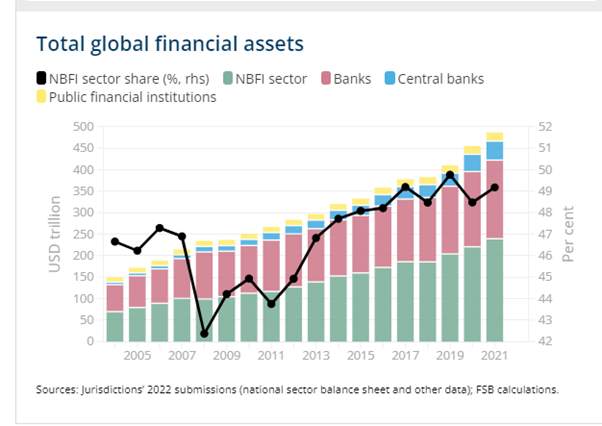

6 NBFI Non-Bank Finanical Institutions (Shadow Banks)
Michael Roberts
The new risk that has ‘popped out’ is with non-bank financial institutions (NBFI), comprising investment funds, insurance companies, pension funds and other financial intermediaries. These are sometimes called ‘shadow banks’. NBFIs now account for 50% of global financial services assets and they are pretty much unregulated.

Within the euro area, the growth of the NBFI sector accelerated after the global financial crisis, doubling since 2008, from €15 trillion to €31 trillion. The share of credit granted by NBFIs to euro area non-financial corporates increased from 15% in 2008 to 26% at the end of last year. Overall, the NBFI sector assets are now around 80% relative to the size of the banking sector.
And here is the problem. NBFIs are prone to the risk of sudden ‘de-leveraging’ when asset prices suddenly change and become volatile. This is nothing new and is in the nature of such speculative capital. And the collapse of any large NBFI will spill over into the banking system in general. The examples are numerous: the collapse of the hedge fund Long Term Capital Management as a result of showed how financial stress in a highly leveraged NBFI can transmit directly to the large banks at the heart of the financial system
Banks are directly connected to the NBFI sector entities via loans, securities and derivatives exposures, as well as through funding dependencies. I quote the ECB: “Funding from NBFI entities is possibly one of the most significant spillover channels from a systemic risk perspective, given that NBFI entities maintain their liquidity buffers primarily as deposits in banks and interact in the repo markets with banks.”
A recent report by the Bank of England concluded that: “shadow banks operate alongside commercial banks to securitize risky individual loans and hence produce standardised asset-backed securities. Investors perceive these securities, free of any idiosyncratic risk, to be nearly as safe as traditional bank deposits, and consequently purchase them. That, in turn, allows banks to expand lending by charging lower spreads. …In periods of stress, however, the “nearly” qualification turns out to be crucial and the imperfect substitution between securities and deposits grows apparent. Securities suddenly command a higher premium, enough to curtail the capacity of shadow banks to engage in securitization. This spills over to commercial banks: no longer able to offload part of their portfolio at the same price, they resort to increasing spreads on consumers and businesses alike…as spreads shoot up, credit becomes dearer. Indebted households must cut back on goods and housing purchases. Indebted firms must cut back on capital purchases. Employment, consumption and investment fall, causing a recession. Thus, a drop in investor confidence—we call it a market sentiment shock—produces strong and positive co-movements among the main macroeconomic variables, credit quantities, and asset prices, as well as countercyclical movements in household and business credit spreads.”
In short, ‘shadow bank’ speculative lending is very liable to lead to a breakdown in credit, spreading to the wider banking sector and then into the real economy, triggering a crash. Non-banks’ leverage “can potentially threaten financial stability
In essence, nothing has changed since Marx wrote in Volume 3 of Capital that: “if the credit system appears as the principal lever of overproduction and excessive speculation in commerce, this is simply because the reproduction process, which is elastic by nature, is now forced to its most extreme limit. A crisis must inevitably break out if credit is withdrawn.”
[Roberts (2023) Hiding in the shadows]https://thenextrecession.wordpress.com/2023/10/02/hiding-in-the-shadows/)